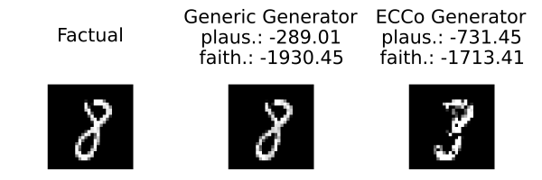

Faithfulness and Plausibility
The implementation of our faithfulness and plausibility metrics is based on our AAAI 2024 paper. There is no consensus on the best way to measure faithfulness and plausibility and we are still conducting research on this. This tutorial is therefore also a work in progress. Current limitations are discussed below.
We begin by loading some dependencies:
# Packages
using CounterfactualExplanations
using CounterfactualExplanations.Evaluation
using CounterfactualExplanations.Convergence
using CounterfactualExplanations.Models
using Flux
using JointEnergyModels
using MLJFlux
using EnergySamplers: PMC, SGLD, ImproperSGLD
using TaijaDataSample-Based Metrics
In Altmeyer et al. (2024), we defined two sample-based metrics for plausibility and faithfulness. The metrics rely on the premise of comparing the counterfactual to samples drawn from some target distribution. To assess plausibility, we compare the counterfactual to samples drawn from the training data that fall into the target class. To assess faithfulness, we compare the counterfactual to samples drawn from the model posterior conditional through Stochastic Gradient Langevin Dynamics (SGLD). For details specific to posterior sampling, please consult our documentation Taija’s EnergySamplers.jl. For broader details on this topic, please consult Altmeyer et al. (2024).
Simple Example
Below we generate a simple synthetic dataset with two output classes, both Gaussian clusters with different centers. We then train a joint energy-based model (JEM) using Taija’s JointEnergyModels.jl package to both discriminate between output classes and generate inputs.
n_obs = 1000
X, y = TaijaData.load_blobs(n_obs; cluster_std=0.1, center_box=(-1. => 1.))
data = CounterfactualData(X, y)
n_hidden = 16
_batch_size = Int(round(n_obs/10))
epochs = 100
M = Models.fit_model(
data,:JEM;
builder=MLJFlux.MLP(
hidden=(n_hidden, n_hidden, n_hidden),
σ=Flux.swish
),
batch_size=_batch_size,
finaliser=Flux.softmax,
loss=Flux.Losses.crossentropy,
jem_training_params=(
α=[1.0,1.0,1e-1],
verbosity=10,
),
epochs=epochs,
sampling_steps=30,
)Next, we generate counterfactuals for a randomly drawn sampler using two different generators: firstly, the GenericGenerator and, secondly, the ECCoGenerator. The latter was proposed in Altmeyer et al. (2024) to generate faithful counterfactuals by constraining their energy with respect to the model. In both cases, we generate multiple counterfactuals for the same factual. Each time the search is initialized by adding a small random perturbation to the features following (Slack et al. 2021). For both generators, we then compute the average plausibility and faithfulness of the generated counterfactuals as defined above and plot the counterfactual paths in the figure below. The estimated values for the plausibility and faithfulness are shown in the plot titles and indicate that the ECCoGenerator performs better in both regards.
To better understand why the ECCoGenerator generates more faithful counterfactuals, we have also plotted samples drawn from the model posterior $p_{\theta}(X|y=1)$ in green: these largely overlap with training data in the target distribution, which indicates that the JEM has succeeded on both tasks—discriminating and generating—for this simple data set. The energy constraint of the ECCoGenerator ensures that counterfactuals remain anchored by the learned model posterior conditional distribution. As demonstrated in Altmeyer et al. (2024), faithful counterfactuals will also be plausible if the underlying model has learned plausible explanations for the data as in this case. For the GenericGenerator, counterfactuals end up outside of that target distribution, because the distance penalty pulls counterfactuals back to their original starting values.
using Measures
# Select a factual instance:
target = 1
factual = 2
chosen = rand(findall(predict_label(M, data) .== factual))
x = select_factual(data, chosen)
# Search parameters:
opt = Adam(0.005)
conv = GeneratorConditionsConvergence()
# Generic Generator:
λ₁ = 0.1
generator = GenericGenerator(opt=opt, λ=λ₁)
ce = generate_counterfactual(x, target, data, M, generator; convergence=conv, num_counterfactuals=5)
faith = Evaluation.faithfulness(ce)
plaus = Evaluation.plausibility(ce)
p1 = plot(ce; zoom=-1, target=target)
X̂ = ce.search[:energy_sampler][ce.target].posterior
title = "Generic Generator\nplaus.: $(round(plaus, digits=2)); faith.: $(round(faith, digits=2))"
scatter!(X̂[1, :], X̂[2, :]; label="X|y=$target", shape=:star5, ms=10, title=title, color=3, alpha=0.1)
scatter!(ce.x′[1,:], ce.x′[2,:]; label="Counterfactual", shape=:star1, ms=20, color=4)
# Search:
λ₂ = 1.0
generator = ECCoGenerator(opt=opt; λ=[λ₁, λ₂])
ce = generate_counterfactual(x, target, data, M, generator; convergence=conv, num_counterfactuals=5)
faith = Evaluation.faithfulness(ce)
plaus = Evaluation.plausibility(ce)
p2 = plot(ce; zoom=-1, target=target)
X̂ = ce.search[:energy_sampler][ce.target].posterior
title = "ECCo Generator\nplaus.: $(round(plaus, digits=2)); faith.: $(round(faith, digits=2))"
scatter!(X̂[1, :], X̂[2, :]; label="X|y=$target", shape=:star5, ms=10, title=title, color=3, alpha=0.1)
scatter!(ce.x′[1,:], ce.x′[2,:]; label="Counterfactual", shape=:star1, ms=20, color=4)
plot(p1, p2; size=(1000, 400), topmargin=5mm)
Current Limitations
But things do not always turn out this well. Our next example demonstrates an important shortcoming of the framework proposed in Altmeyer et al. (2024). Instead of training a JEM, we now train a simpler, purely discriminative model:
n_obs = 1000
X, y = TaijaData.load_blobs(n_obs; cluster_std=0.1, center_box=(-1. => 1.))
data = CounterfactualData(X, y)
flux_training_params.n_epochs = 1
M = Models.fit_model(data,:DeepEnsemble)
CounterfactualExplanations.reset!(flux_training_params)Next, we repeat the same process above for generating counterfactuals. This time we can observe in the figure below that the GenericGenerator produces much more plausible though apparently less faithful counterfactuals than the ECCoGenerator. Looking at the top row only, it is not obvious why the counterfactual produced by the GenericGenerator should be considered as less faithful to the model: conditional samples drawn from $p_{\theta}(X|y=1)$ through SGLD are just scattered all across the target domain on the expected side of the decision boundary. When zooming out (bottom row), it becomes clear that the learned posterior conditional is far away from the observed training data in the target class. Our definition and measure of faithfulness is in that sense very strict, quite possibly too strict in some cases.
# Select a factual instance:
target = 2
factual = 1
chosen = rand(findall(predict_label(M, data) .== factual))
x = select_factual(data, chosen)
# Search parameters:
opt = Adam(0.1)
conv = GeneratorConditionsConvergence()
# Generic Generator:
generator = GenericGenerator(opt=opt)
ce = generate_counterfactual(x, target, data, M, generator; convergence=conv, initialization=:identity)
plaus = Evaluation.plausibility(ce)
faith = Evaluation.faithfulness(ce)
X̂ = ce.search[:energy_sampler][ce.target].posterior
title = "Generic Generator\nplaus.: $(round(plaus, digits=2)); faith.: $(round(faith, digits=2))"
p1 = plot(ce, zoom=-1, target=target)
scatter!(X̂[1, :], X̂[2, :]; label="X|y=$target", shape=:star5, ms=10, title=title, color=3, alpha=0.2)
scatter!(ce.x′[1,:], ce.x′[2,:]; label="Counterfactual", shape=:star1, ms=20, color=4)
_lim = maximum(abs.(X̂))
xlims, ylims = (-_lim, _lim), (-_lim, _lim)
p3 = plot(ce; xlims=xlims, ylims=ylims, target=target)
scatter!(X̂[1, :], X̂[2, :]; label="X|y=$target", shape=:star5, ms=10, title=title, color=3, alpha=0.2)
scatter!(ce.x′[1,:], ce.x′[2,:]; label="Counterfactual", shape=:star1, ms=20, color=4)
# Search:
generator = ECCoGenerator(opt=opt; λ=[0.1, 1.0])
ce = generate_counterfactual(x, target, data, M, generator; convergence=conv, initialization=:identity)
plaus = Evaluation.plausibility(ce)
faith = Evaluation.faithfulness(ce)
X̂ = ce.search[:energy_sampler][ce.target].posterior
title = "ECCo Generator\nplaus.: $(round(plaus, digits=2)); faith.: $(round(faith, digits=2))"
p2 = plot(ce, zoom=-1, target=target)
scatter!(X̂[1, :], X̂[2, :]; label="X|y=$target", shape=:star5, ms=10, title=title, color=3, alpha=0.2)
scatter!(ce.x′[1,:], ce.x′[2,:]; label="Counterfactual", shape=:star1, ms=20, color=4)
_lim = maximum(abs.(X̂))
xlims, ylims = (-_lim, _lim), (-_lim, _lim)
p4 = plot(ce; xlims=xlims, ylims=ylims, target=target)
scatter!(X̂[1, :], X̂[2, :]; label="X|y=$target", shape=:star5, ms=10, title=title, color=3, alpha=0.2)
scatter!(ce.x′[1,:], ce.x′[2,:]; label="Counterfactual", shape=:star1, ms=20, color=4)
plot(p1, p2, p3, p4; size=(1000, 800), topmargin=5mm)
Looking at a different domain like images demonstrates another limitation of the sample-based metrics. Below we generate counterfactuals for turning an 8 into a 3 using our two generators from above for a simple MNIST (LeCun 1998) classifier. Looking at the figure below, arguably the ECCoGenerator generates a more plausible counterfactual in this case. Unfortunately, according to the sample-based plausibility metric, this is not the case.
_nrow = 3
Random.seed!(42)
X, y = TaijaData.load_mnist()
data = CounterfactualData(X, y)
using CounterfactualExplanations.Models: load_mnist_model
using CounterfactualExplanations: JEM
M = load_mnist_model(MLP())
# Select a factual instance:
target = 3
factual = 8
chosen = rand(findall(predict_label(M, data) .== factual))
x = select_factual(data, chosen)
# Search parameters:
opt = Adam(0.1)
conv = GeneratorConditionsConvergence()
λ₁ = 0.0
λ₂ = 0.5
# Factual:
factual = convert2image(MNIST, reshape(x, 28, 28))
p1 = plot(factual; title="\nFactual", axis=([], false))
# Generic Generator:
generator = GenericGenerator(opt=opt; λ=λ₁)
ce = generate_counterfactual(x, target, data, M, generator; convergence=conv, initialization=:identity)
faith = Evaluation.faithfulness(ce; nsamples=_nrow^2, niter_final=10000)
plaus = Evaluation.plausibility(ce)
img = convert2image(MNIST, reshape(ce.x′, 28, 28))
title = "Generic Generator\nplaus.: $(round(plaus, digits=2))\nfaith.: $(round(faith, digits=2))"
p2 = plot(img, title=title, axis=([], false))
# Search:
generator = ECCoGenerator(opt=opt; λ=[λ₁, λ₂])
ce = generate_counterfactual(x, target, data, M, generator; convergence=conv, initialization=:identity)
faith = Evaluation.faithfulness(ce; nsamples=_nrow^2, niter_final=10000)
plaus = Evaluation.plausibility(ce)
img = convert2image(MNIST, reshape(ce.x′, 28, 28))
title = "ECCo Generator\nplaus.: $(round(plaus, digits=2))\nfaith.: $(round(faith, digits=2))"
p3 = plot(img, title=title, axis=([], false))
plot(p1, p2, p3; size=(600, 200), layout=(1, 3), topmargin=15mm)
References
Altmeyer, Patrick, Mojtaba Farmanbar, Arie van Deursen, and Cynthia CS Liem. 2024. “Faithful Model Explanations Through Energy-Constrained Conformal Counterfactuals.” In Proceedings of the AAAI Conference on Artificial Intelligence, 38:10829–37. 10.
LeCun, Yann. 1998. “The MNIST Database of Handwritten Digits.” http://yann.lecun.com/exdb/mnist/.
Slack, Dylan, Anna Hilgard, Himabindu Lakkaraju, and Sameer Singh. 2021. “Counterfactual Explanations Can Be Manipulated.” Advances in Neural Information Processing Systems 34.